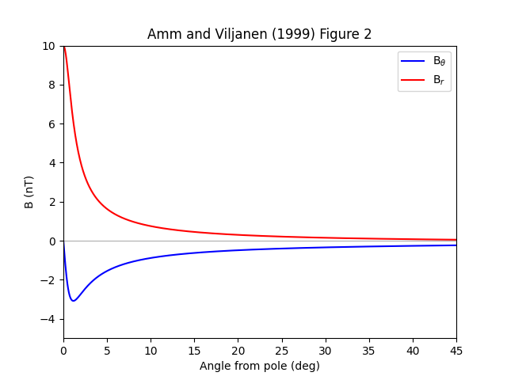

Note
Click here to download the full example code
Divergence free magnetic field¶
This example demonstrates the resulting angular profile of an SECS pole placed at the north pole. Figure 2 from Amm and Viljanen 1999.
import matplotlib.pyplot as plt
import numpy as np
from pysecs import SECS
# Radius of Earth
R_E = 6378e3
# Pole of the current system at the North Pole
sec_loc = np.array([90., 0., R_E + 100e3])
# Set up the system with a single SEC
system_df = SECS(sec_df_loc=sec_loc)
# Fit unit currents since we aren't fitting to any data
system_df.fit_unit_currents()
# Scale the system corresponding to Figure 2 of
# Amm and Viljannen (1999) doi:10.1186/BF03352247
# 10 kA
total_current = 10000
system_df.sec_amps *= total_current
# Set up the prediction grid
N = 1000
pred_loc = np.zeros(shape=(N, 3))
angles = np.linspace(0, 45, N)
pred_loc[:, 0] = 90-angles
pred_loc[:, 2] = R_E
B_pred = system_df.predict(pred_loc=pred_loc)
# B_theta == -Bx == -B_pred[:,0]
# Convert to nT (1e9)
B_theta = -B_pred[:, 0]*1e9
# B_r == -Bz = -B_pred[:,2]
B_r = -B_pred[:, 2]*1e9
fig, ax = plt.subplots()
ax.plot(angles, B_theta, c='b', label=r'B$_{\theta}$')
ax.plot(angles, B_r, c='r', label=r'B$_r$')
ax.legend(loc='upper right')
ax.set_xlim(angles[0], angles[-1])
ax.set_ylim(-5, 10)
ax.set_xlabel('Angle from pole (deg)')
ax.set_ylabel('B (nT)')
ax.axhline(0., c='k', alpha=0.5, linewidth=0.5)
ax.set_title('Amm and Viljanen (1999) Figure 2')
plt.show()
Total running time of the script: ( 0 minutes 0.299 seconds)